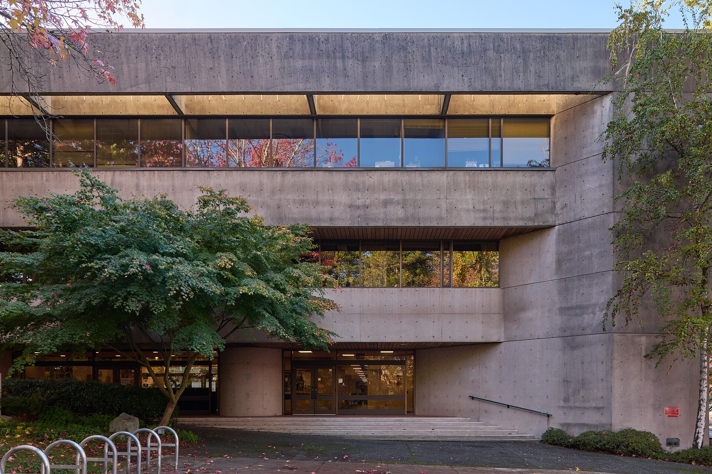
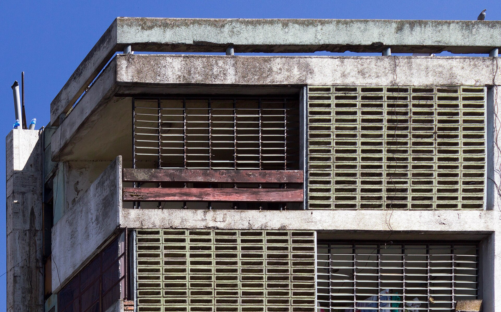
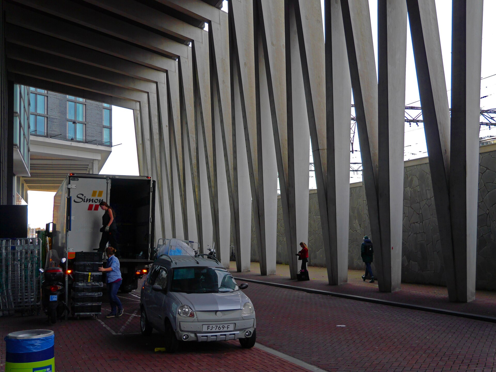
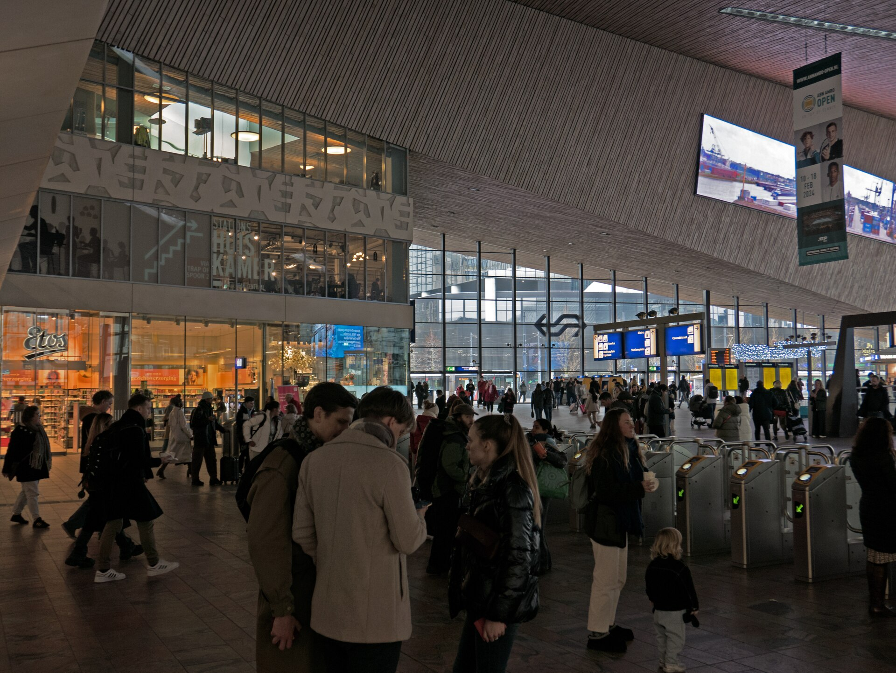
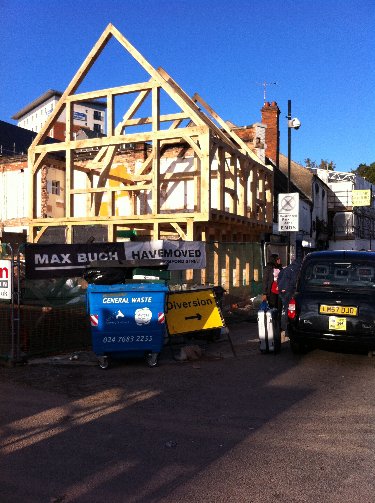

Yapı Kesiti
Mimarlık, yapı ve malzeme kararları
Arşiv fotoğrafı · Vancouver, Kanada
Yapıyı katmanlarıyla oku.
Yapı Kesiti, mimarlık ve inşaat hizmetleri için hazırlanmış örnek bir tema. Proje fotoğrafları arşivden seçilmiştir; belirli bir ofisi ya da tamamlanmış işi temsil etmez.
Yapıya yakından
Farklı ölçeklerde cephe, taşıyıcı ve iç mekân okumaları.



Kesitte ne var?
Örnek yapı kesiti, bir binanın yükü temele ve dış ortamla kurduğu sınırı nasıl aktardığını gösterir.
Kesit katmanını seç
Döşemeler ve kolonlar, yükü temel sistemine aktarır.
- KabukÇatı, dış duvar ve açıklıkların birleşimi.
- TaşıyıcıDöşeme ve kolonların yük aktarımı.
- TemelYükün zemine iletildiği alt yapı.
Şema örnektir; mühendislik projesi veya uygulama detayı değildir.
Arşiv fotoğrafı · Vancouver, Kanada
Fikirden uygulamaya
Bir yapı işi; ihtiyaçların tanımlanması, tasarım kararlarının geliştirilmesi ve uygulama belgelerinin hazırlanmasıyla ilerler.
- İhtiyaçYer, kullanım ve kapsam netleşir.
- TasarımPlan, kesit ve malzeme ilişkisi kurulur.
- UygulamaDetaylar ve saha koordinasyonu birlikte ele alınır.